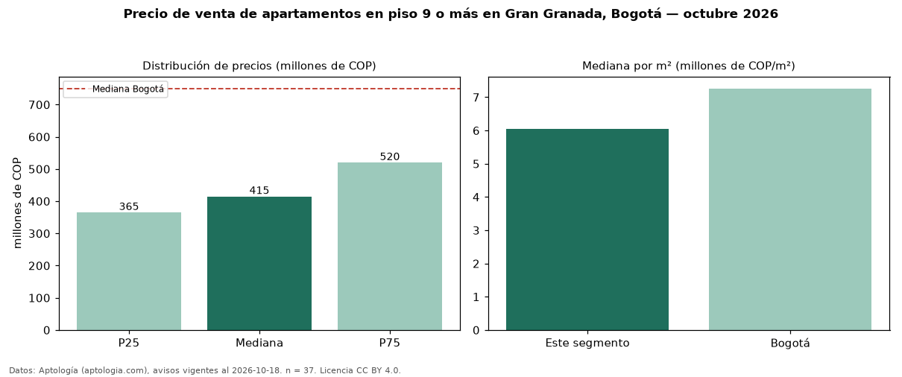

Precio de venta de apartamentos en piso 9 o más en Gran Granada, Bogotá — octubre 2026
Con 37 avisos vigentes, el precio mediano de apartamentos en piso 9 o más en venta en Gran Granada, Bogotá es COP 415 millones. Frente a la mediana de todos los apartamentos en venta de Gran Granada (COP 395 millones, n = 151), queda 5 % por encima; este segmento reúne el 25 % de esos avisos. Por metro cuadrado, la mediana es COP 6,05 millones/m² (n = 37), 2 % por encima del conjunto de referencia (COP 5,94 millones/m²). El área mediana anunciada es 71 m². El segmento con más oferta es el de 3 o más habitaciones (35 avisos, mediana COP 415 millones). La administración mediana declarada es COP 403.500 al mes (n = 28). El estrato más frecuente es 4 (92 % de los avisos con estrato). La mediana de todos los apartamentos en venta de Bogotá es COP 750 millones (−45 % de diferencia). Datos: Aptología (aptologia.com), CC BY 4.0 — https://www.aptologia.com/venta/bogota/gran-granada. Archivos: PDF, CSV con las cifras y gráfica PNG.

| Avisos únicos | 37 |
|---|---|
| Percentil 25 | COP 365.000.000 |
| Mediana | COP 415.000.000 |
| Percentil 75 | COP 520.000.000 |
| Mediana por m² | COP 6.049.382 |
Fuente: avisos vigentes de portales inmobiliarios recopilados por Aptología, deduplicados (mínimo 30 avisos únicos por celda). Precios pedidos, no cerrados. Fecha: 2026-10-18.